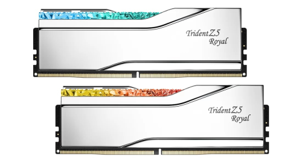

Ram nedir Ne işer yarar?
RAM (Random Access Memory - Rastgele Erişimli Bellek), bilgisayarın anlık olarak çalıştığı programların, açık pencerelerin ve oyunların verilerini geçici olarak saklayan yüksek hızlı çalışma hafızasıdır.

RAM Ne İşe Yarar?
- Çalışma Mantığı: Bilgisayarınızda bir program, oyun veya sekme açtığınızda, bu veriler yavaş olan SSD/HDD'den alınır ve çok daha hızlı olan RAM'e yüklenir
- şlemciye Hız Kazandırır: İşlemci (CPU), ihtiyaç duyduğu verilere milisaniyeler yerine nanosaniyeler seviyesinde ulaşarak takılmadan çalışır
- Çoklu Görev (Multitasking): Aynı anda arka planda birden fazla programın (tarayıcı, müzik, oyun, Photoshop vb.) kasmadan açık kalabilmesini sağlar
- Geçici Depolamadır: Bilgisayar kapatıldığında veya elektrik kesildiğinde RAM üzerindeki tüm veriler silinir. Kalıcı veriler SSD/HDD'de saklanır
RAM mimarisi

Görseldeki mimari diyagramında yer alan bileşenleri ve RAM (Random Access Memory - Rastgele Erişimli Bellek) bileşeninin ne işe yaradığını detaylıca açıklayalım
1. RAM Yongaları (Gövde)
Ana veri depolama alanıdır. İşlemcinin (CPU) o an kullandığı veriler geçici olarak bu yongalarda saklanır2. SPD EEPROM Yongası
RAM modülünün "kimlik kartı" gibidir. Modülün kapasitesi, çalışma hızı, voltajı ve zamanlamaları (CL değerleri) gibi teknik bilgileri saklar ve anakarta iletir3. PMIC (Power Management IC)
Güç yönetim entegresidir. Özellikle DDR5 belleklerde gücü doğrudan modül üzerinde düzenleyerek daha kararlı, verimli ve stabil bir enerji beslemesi sağlar4. Isı Dağıtıcı (Heat Spreader):
RAM yongalarında oluşan ısıyı emip dışarı yayarak modülün aşırı ısınmasını engeller, yüksek performansta uzun süre çalışmasını ve fiziksel korumasını sağlar5. Kontakt Pinleri ve Konnektör:
Anakart üzerindeki DIMM yuvasına takılan altın kaplama temas noktalarıdır. Verilerin ve gücün anakart ile RAM arasında yüksek hızla iletilmesini sağlar6. PCB (Printed Circuit Board):
Üzerindeki tüm elektronik parçaları birbirine bağlayan ve sinyal yollarını taşıyan çok katmanlı yeşil/siyah devre kartıdır7. Tek Bir RAM Yongasının İç Yapısı (Satır/Sütun ve Bellek Hücresi):
RAM içindeki milyarlarca küçük hücreden oluşur. Her hücre 1 bitlik (0 veya 1) veri saklar. Bir kapasitör ve bir transistörden oluşur. Kapasitör şarj tutarak veriyi saklar, ancak düzenli tazelemeye ihtiyaç duyar8. Veri Akışı: CPU - RAM Etkileşimi:
İşlemcinin anlık erişmesi gereken verileri tutar. SSD/HDD gibi kalıcı depolama birimleri çok yavaş olduğu için, işlemci doğrudan RAM ile yüksek hızda haberleşir